A notebook that stays on your desk.
Scribly is a free Windows notebook for writing, keeping a second note in view, and sketching architecture boards. No account. No cloud.
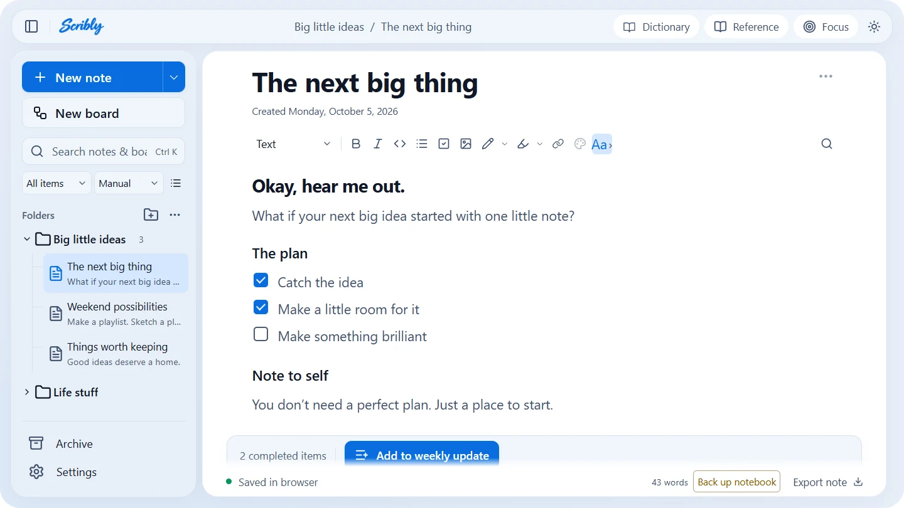
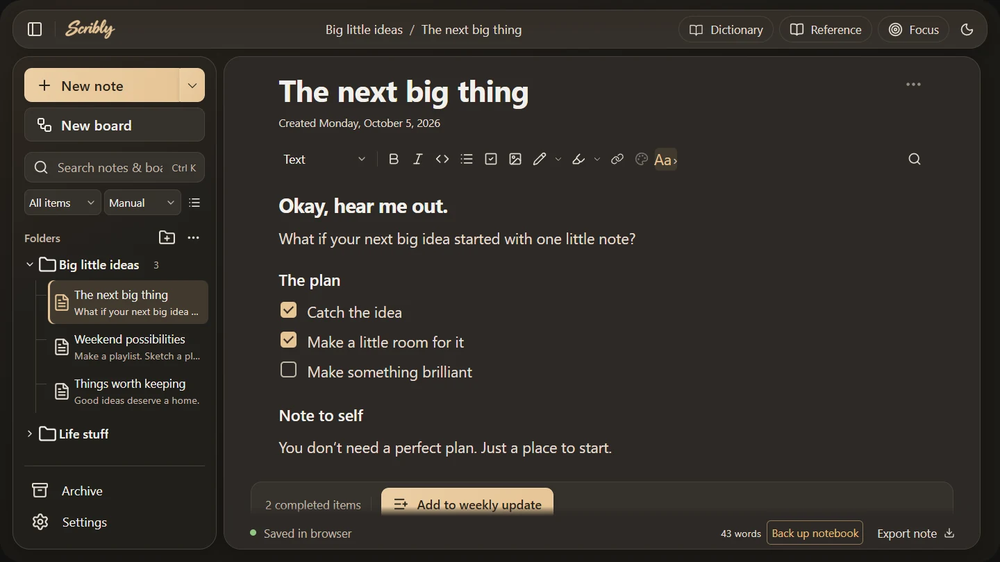
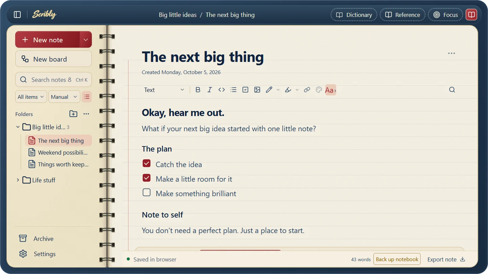
Mark it up, right on the note.
Drag a highlighter or pen across your text and images. Guided mode keeps strokes dead straight at any angle. Free mode follows your hand.
- Highlight sizes 8, 16 and 24px. Pen sizes 1, 3 and 6px.
- Undo and redo cover every stroke, and clearing too.
- Press Esc mid-stroke to cancel it.
- Strokes save with the note and with backups.
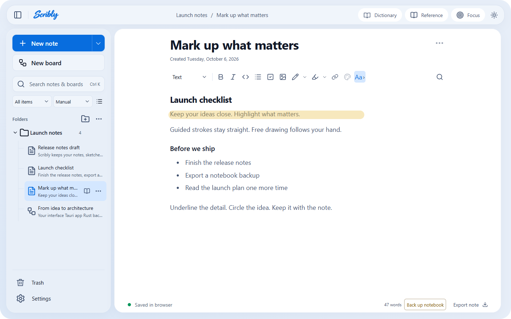
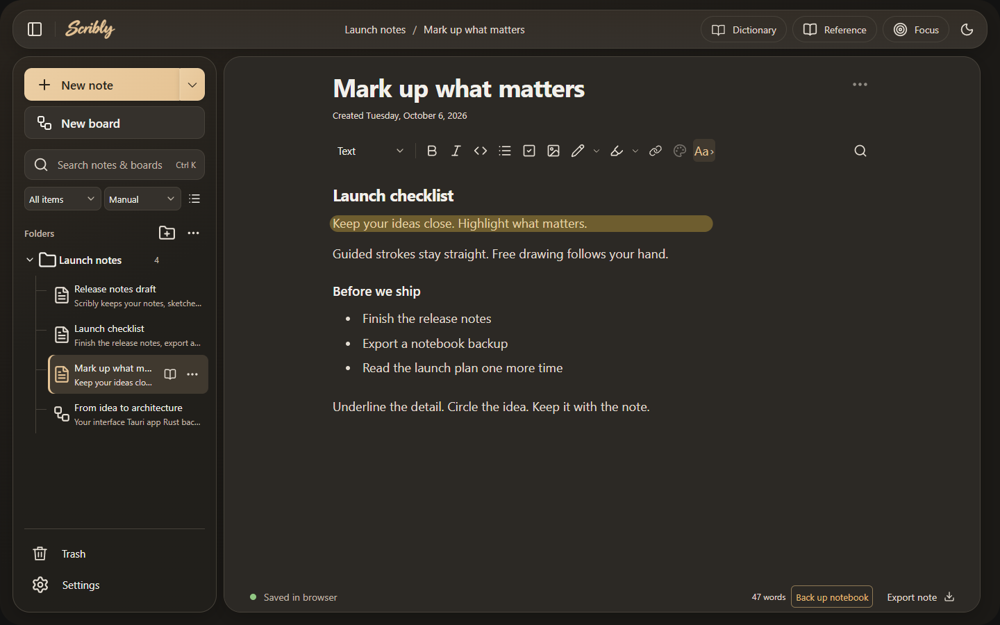
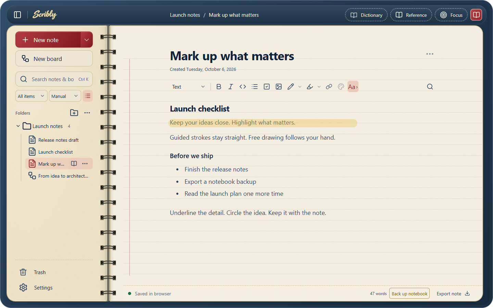
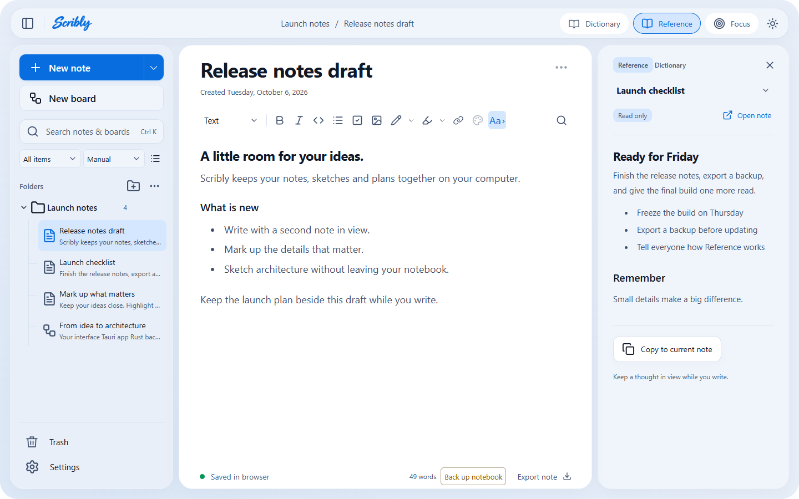
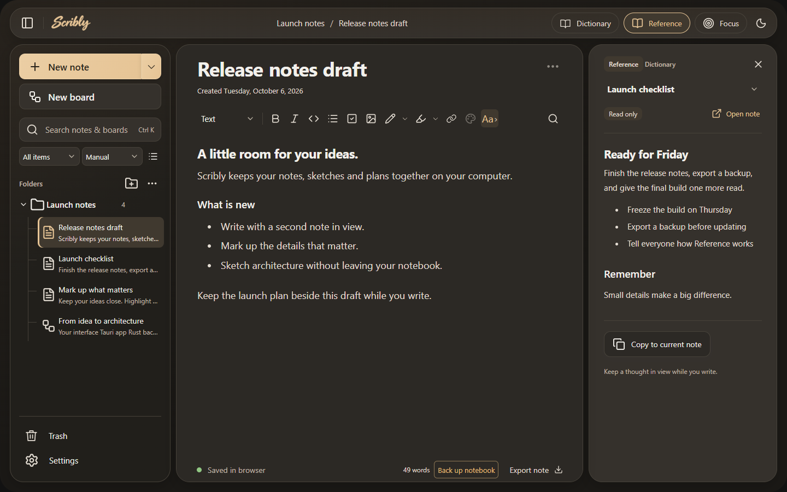
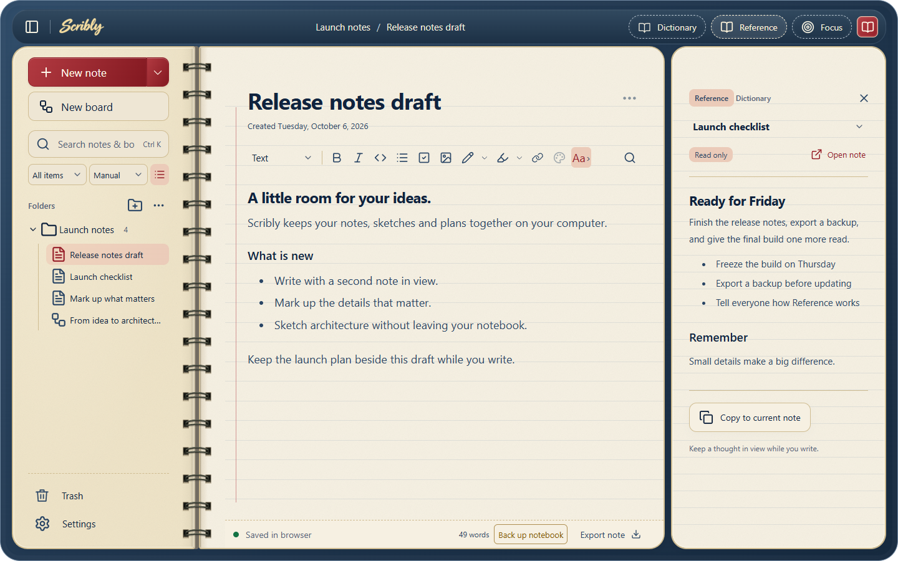
Keep a second note in view.
Writing the release notes while the launch plan sits next to them? Open any note or board as Reference. It's read-only, so you can't wreck it by accident.
- Hover a row and tap the book, or Alt+click it.
- CtrlShiftR opens and closes the panel.
- Need more room? CtrlShiftF is Focus mode.
Sketch the architecture, then export it.
Boards are Excalidraw canvases built into your notebook. Drop in components, connect them with elbow arrows, and send the result out as a drawing, SVG, PNG or Mermaid.
From a quick sketch to a connected system, keep the whole picture in your notebook.
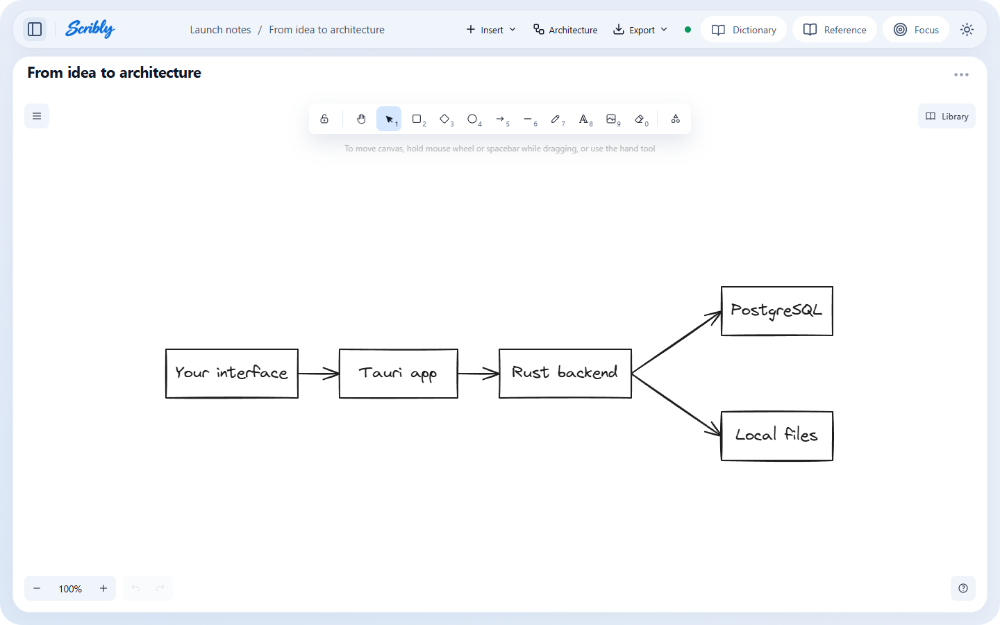
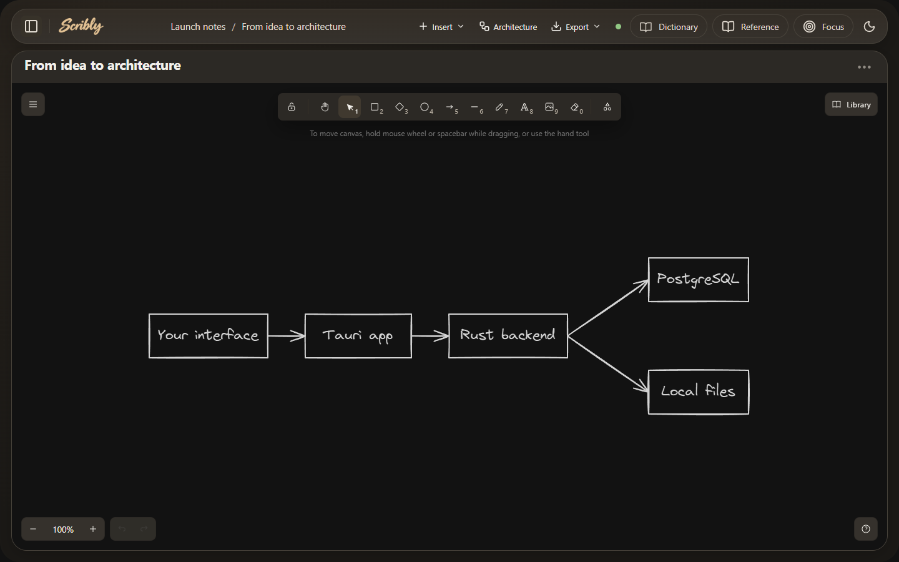
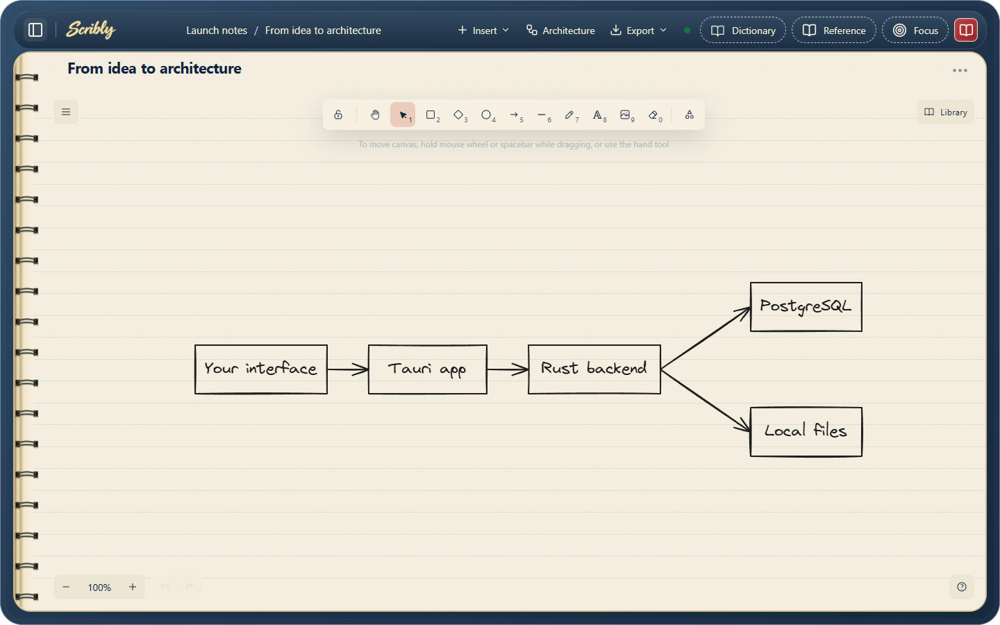
Notes
Drag a note onto the trash.Delete without the dread.
Removed notes, boards and whole folders go to Trash first. Drag them onto the can, watch the lid open, and restore them whenever you change your mind.
New notes get a name too. The first one in a folder each day is titled with the folder and date. After that, mythology names arrive in A to Z order, each with a small fun fact. Press New note to see.
- Clear Trash asks for confirmation before anything is gone for good.
- Restoring a note also brings back its folder.
Oops-proof, three ways.
Scribly saves as you pause, and gives you more than one way back when you change your mind.
Version history
Scrub through dated versions of a note. Restoring keeps your current text first.
Up to 20 versions per item for 30 days.
Backups
The Back up notebook button turns amber when you haven't exported in a week.
Last backup: 9 days ago. Time for another.
Optional daily backups keep seven ordinary copies plus three from before any notebook replacement.
Bring your stuff
Drop files to see what Scribly would do with them. Nothing leaves this page.
And a drawer full of small things.
The kind of details you only notice when they're missing.
Folders and search
Sort by hand, by date or A to Z. Ctrl+K searches the whole notebook with excerpts, then jumps to the match.
Code blocks
Type three backticks and a space. Highlighting for JavaScript, TypeScript, Rust, Python, SQL, Go, YAML and more, with a language picker when auto-detect guesses wrong.
Images
Paste, drag in, resize, caption, align. PNG, JPEG, WebP and GIF up to 5 MB each, and they work offline.
Connected notes
Link with Ctrl+L, see backlinks, and turn any note into a template.
Find and replace
Ctrl+F to find, Ctrl+H to replace, with match case and whole word. One Undo reverses the whole replacement.
Export that looks right
Markdown ZIP with image files, standalone HTML, or Print to PDF. A preview shows what changes before you export.
Quick capture
Jot a thought into Inbox without leaving your current note. Add an optional global shortcut in Settings.
Rescue Notepad tabs
Import unsaved Windows Notepad and Notepad++ tabs. Originals stay untouched, and duplicates are skipped.
Fonts and themes
Six note fonts ship inside the app, so they work offline. Pick Light, Dark or System.
Dictionary
Select a word to look it up. WordNet works offline. Online lookups send only the word you picked.
Pins and recents
Pin shortcuts without moving anything. The last ten items you opened are one click away.
Text colors
Select text, right-click, and choose a color or highlight. Colors adapt to light and dark.
Your hands never leave the keys.
Click a row, or click the pad and press a real shortcut. Even this page has a Ctrl+K search, in honor of Scribly's.
Your browser keeps a few combos for itself, like Ctrl+N. Click those instead.
Your notes stay home.
Everything lives in a database on your own computer. PostgreSQL is bundled, listens only on loopback with a random port and an app-generated password, and stops when Scribly closes.
- No account and no sign-in.
- No cloud sync and no shared editing. It's a personal notebook.
- Updates and uninstalling leave your notebook folder alone.
- Export a backup now and then. It's the safe way to copy a notebook.
Honest fine print: optional word suggestions and online dictionary lookups do contact outside services, and they send only a few words, never the whole note.
Three steps to a quieter desk.
- Download the installerGrab the setup EXE from the latest release. The source ZIP is only for developers.
- Run itScribly installs for your Windows account. No administrator access needed.
- Open it from the Start menuNew notebooks begin with one Introduction folder and a getting-started note.
Scribly 1.4.1
Download for Windows- Microsoft WebView2 is required. Setup fetches it if missing, so the first install may need internet.
- The database is bundled. Nothing else to configure.
- Free, with no automatic updater. Updates are manual.
Get-FileHash .\Scribly_1.4.1_x64-setup.exe -Algorithm SHA256Updating? Export a backup in Settings, close Scribly, then run the newer installer. Your notebooks are kept.
Free, and open to everyone.
Scribly is MIT licensed. Use it, change it, redistribute it, even commercially. Bug fixes, docs, accessibility work and tests are all welcome.